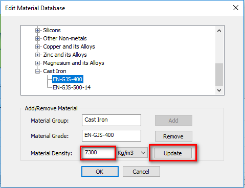

砂型鋳造部品における最小肉厚は、鋳物のサイズおよび重量に関連付けて設定する必要があります。
極端に薄い部位や厚肉部は、鋳造において重大な問題を引き起こします。鋳物の断面肉厚は、巣や引け巣などの欠陥を防ぐために均一である必要があります。多くの場合、肉厚が小さすぎると、溶湯が鋳型内を十分に流れなくなります。一方で、厚肉部は薄肉部に比べて冷却に時間がかかります。
肉厚を均一に保つことで、熱応力および残留応力を低減できます。肉厚の急激な変化は避け、フィレットを設ける、またはテーパ状にすることが推奨されます。
一般的なガイドラインでは、最小肉厚が小さすぎると鋳型内での金属流動を妨げるとされています。ただし、鋳物のサイズや重量によっては、最小肉厚を十分に確保できない場合もあります。
DFMProは、面間の肉厚を検証し、鋳物のサイズおよび重量に基づく最小肉厚が、設定された値以上であることを確認します。設計者は、鋳物サイズ範囲、鋳物重量範囲、またはその両方を設定できます。実際の部品サイズおよび重量に基づいて、DFMProは最小肉厚の値を設定値と比較します。
鋳物サイズ：鋳物の最大断面長 <CS> は、以下に示すように最大対角長とします。
本ルールを使用するには、新たに追加した材料グループおよびグレードに対して、材料データベース編集ダイアログで材料密度を定義することが必須です。
新たに追加した材料グループおよびグレードは、製造プロセスにマッピングする必要があります。


ここで、
t = 最小肉厚